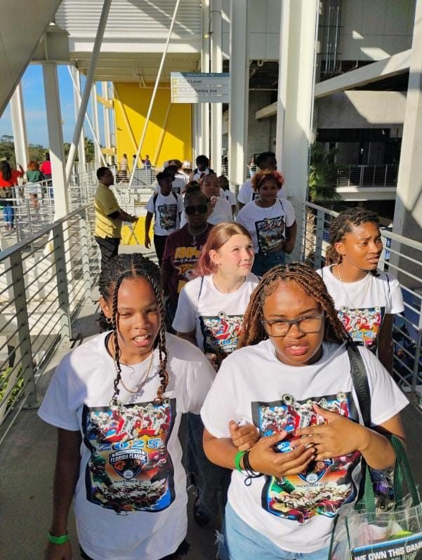
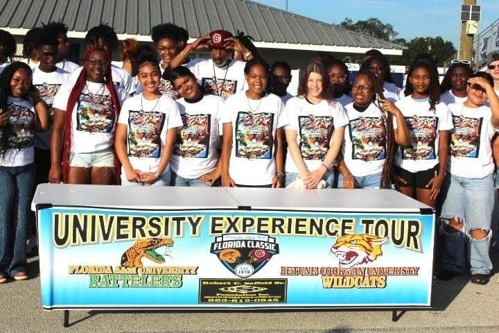
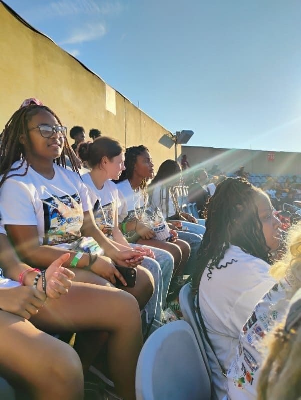
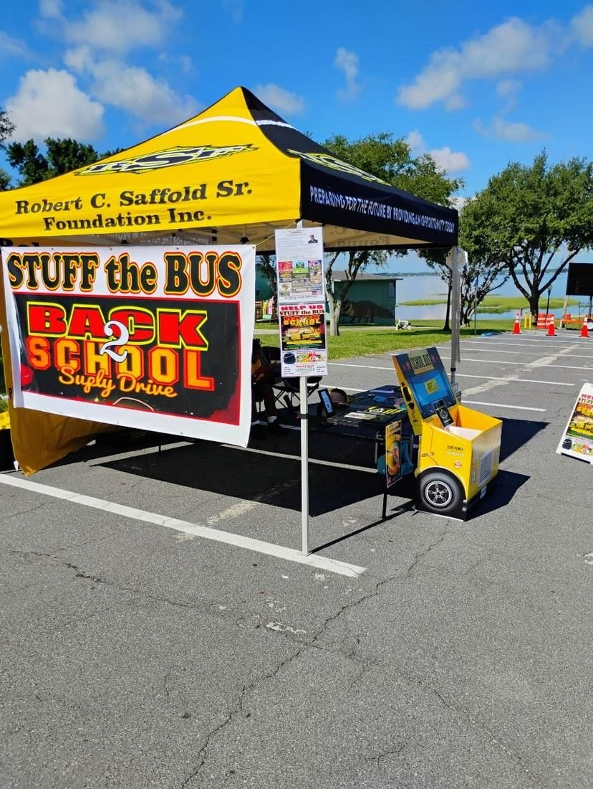
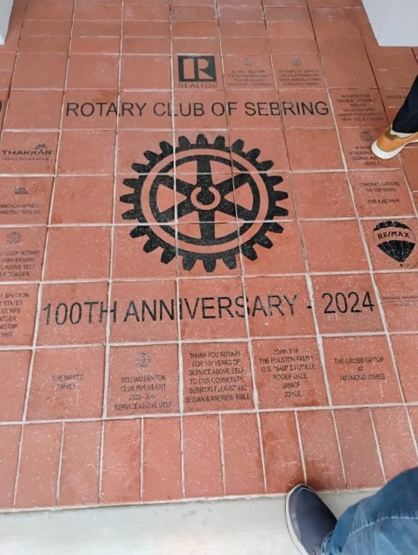
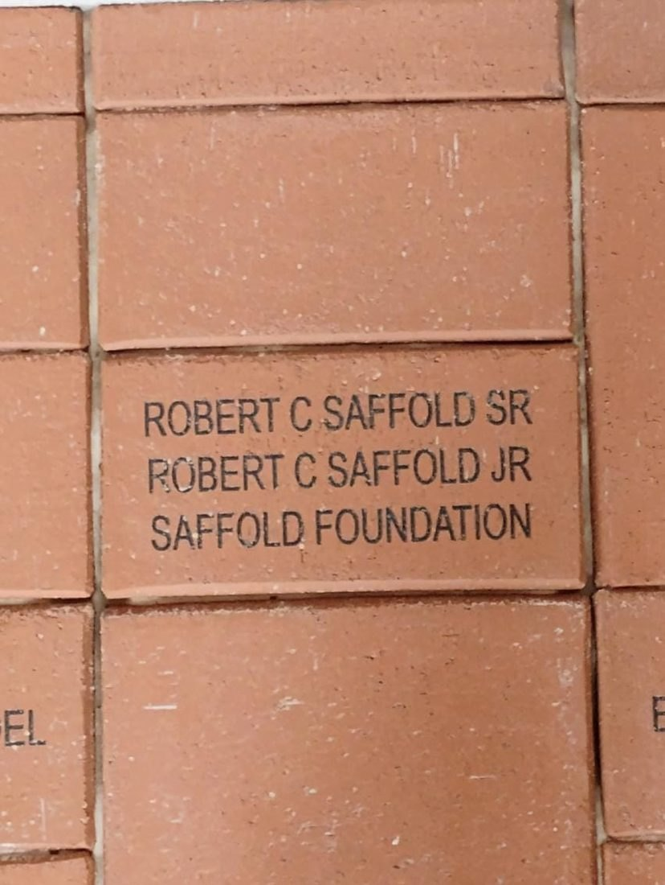

Our work
A chance to see
what comes next.
The Foundation supports disadvantaged youth in Highlands County, carrying Robert Sr.’s commitment to opportunity into a new generation.
High school students
at the Florida Classic
01 / The Annual University Experience
A college campus.
A bigger horizon.
The Annual University Experience combines a campus tour with the Florida Classic each November. In November 2024, fifty high school students attended through the Foundation, and students made the trip again in 2025.
The trip continues a tradition Robert Sr. sustained for about forty years.



02 / School supplies
Stuff the Bus.
Ready for school.
Each July, the Foundation runs Stuff the Bus, its Back 2 School Supply Drive. Every Saturday in July, from 10 AM to 2 PM, neighbors bring supplies to the Sebring Public Library at 319 Center Ave.
Pencils, pens, paper, folders, backpacks, calculators and notebooks go to elementary, middle and high school students across Highlands County. Supplies collected for the 2027-2028 school year go to Divine Academy of the Arts in Sebring.
Questions about Stuff the Bus: call or text 863-812-0845.

03 / African American Heritage Festival
Held February 14 and 15, 2026 · Sebring International Raceway
Unity in the community.
100 years of Black History Month.
The Foundation presented the African American Heritage Festival to celebrate a century of Black History Month. Over two days at Sebring International Raceway, families enjoyed vendors, live music, food trucks, a kids zone, hourly raffles, an award ceremony and a classic car show.
- Boots on the Ground Southern Soul PartySunday, February 15, 2026 · Live entertainment and a DJ at the raceway
- Honoring American Armed ForcesFebruary 21, 2026 · The festival’s tribute to the men and women of the American Armed Forces. All gave some, some gave all.
04 / 19th Hole for Charity
Sharing the love of golf
through giving.
19th Hole for Charity supports youth golf in Highlands County. It is backed by local golf tournaments and golf courses, and by people who love the game.
It carries on the game Robert Sr. organized across Florida, now with young golfers in mind.
Support youth golf ↗05 / Community support
Part of the community.
The Foundation was a Platinum sponsor of Sebring High football in 2023. Its community work also includes a Boys and Girls Club back-to-school bash and a Christmas giveaway.
Robert Sr. was a Highlands County Rotarian. The Rotary Club of Sebring’s brick walkway, which marks the club’s 100th anniversary in 2024, includes an engraved brick for Robert C. Saffold Sr., Robert C. Saffold Jr. and the Saffold Foundation.
Robert Saffold Jr. carries that service forward as a member of the Rotary Club of Sebring and the Sebring Chamber of Commerce.


06 / The memorial tournament
Golf in service of young people.
The fifth annual Memorial Charity Golf Tournament takes place on May 8, 2027 at Golf Hammock Golf and Country Club in Sebring. The fourth annual tournament was played on May 9, 2026 at Sebring Golf Club.
Tournament details ↗